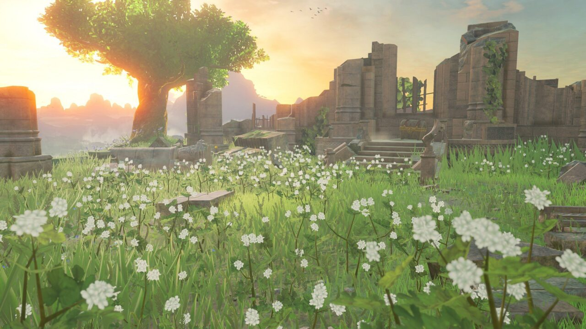
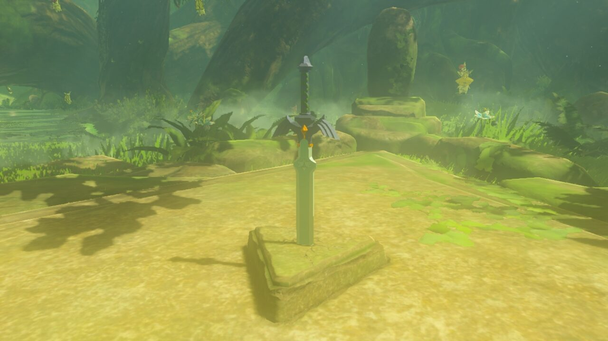
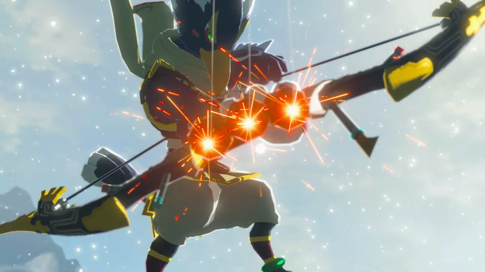

See it, go there
If you can see a mountain on the horizon, you can climb it. Almost every surface in the game is climbable.
The Legend of Zelda
My first open world, and still one of my favorite games.
Start the adventureBackground: Link paragliding over the Great Plateau. Screenshot © Nintendo (official trailer), via Zelda Wiki.
I got my Nintendo Switch for Christmas in 2017. It was my first console, and Breath of the Wild came with it. Before that, the only "real" game I'd put serious time into was Minecraft.
So this wasn't just a new game for me. It was the first time I'd ever played an open world game. Hundreds of hours later, it's still one of my favorites, and I've come back and replayed it a couple of times since.

The map felt huge, because it is. And almost all of it is yours to explore however you want.
If you can see a mountain on the horizon, you can climb it. Almost every surface in the game is climbable.
After the opening area, the game basically lets you loose. You pick where to go and what to do first.
Wandering off in a random direction almost always turns up something: a shrine, a village, a fight, a view.

Honestly one of the prettiest weapon designs in any game. It also gets around my biggest complaint (more on that below): instead of breaking for good, it just runs out of energy and recharges.

Revali's bow. It fires three arrows at once, which makes it one of the most fun weapons to use in the whole game.
Every favorite has a few things that drive you crazy.
Yes. It won Game of the Year at The Game Awards in 2017, and it holds up. The exploration, the combat, and the story all come together into something that still feels special years later.
My one piece of advice: go in blind. The last time I replayed it, I already knew where everything was and exactly what I wanted, and I didn't get nearly as much out of it as the first time. It was still awesome, but the magic of this game is not knowing what's over the next hill. Don't look up guides. Just go.